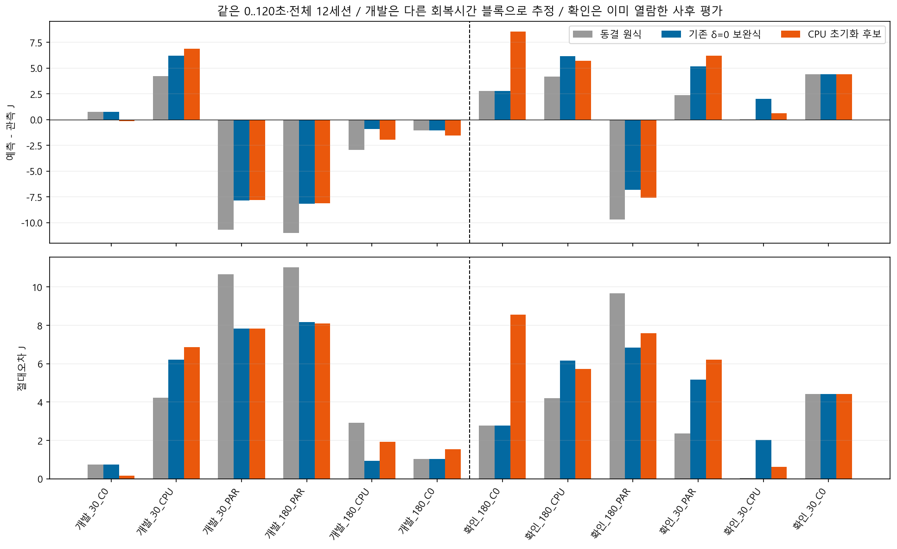
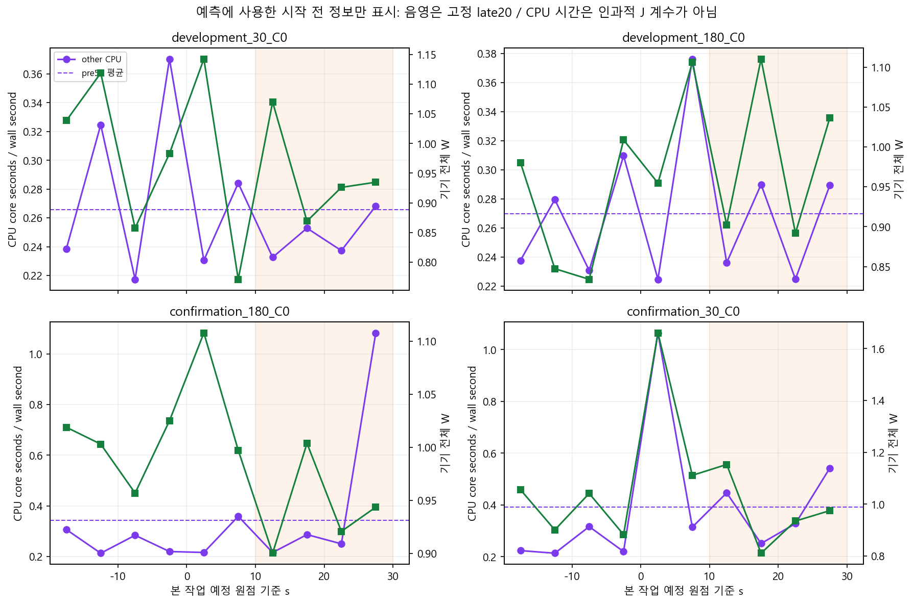
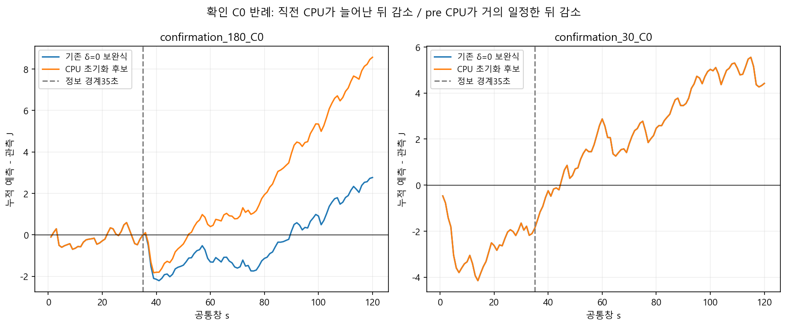

| 같은0..120초 | 동결 원식 | 기존 δ=0 보완식 | CPU 초기화 후보 |
|---|---|---|---|
| 개발6 평균 절대J | 5.104 | 4.157 | 4.403 |
| 이미 본 확인6 평균 절대J | 3.913 | 4.564 | 5.522 |
확인6 중3개 개선/3개 악화, 악화 폭이 더 컸습니다.4개는 개발 시 관측한 CPU 특징 범위 밖이지만 제외하지 않았습니다. CPU 활동과 전력의 연관을 발견한 것과 이후 활동을 예측한 것은 다릅니다.
반례·모형·실제 종료 판정 · 입력·재현 명령 · 모든 조건·구간오차 · 관측/예측·부호·상대오차 · 검증

−20..30초의 pre50과10..30초의 late20 CPU 차이만 사용했습니다. 미래CPU·전력·AP는 입력에 없습니다. CSV는 종료 후 export였으므로 실시간 입력 전달을 구현하거나 검증한 것은 아닙니다.

회복180 C0에서는 직전 CPU 증가 뒤 미래 활동이 줄었습니다. 후보가 기준전력을 +68mW 높여120초 절대오차2.764→8.566J로 악화했습니다. 회복30 C0에서는 직전 평균 활동이 거의 일정해 −0.027mW만 보정했으나 이후 전력은74mW 낮았습니다. 미래 관측은 이 설명에만 사용했습니다.

새 AP 계산·계수 보완은 없습니다. 이전 AP 초기정보 개선 근거는 별도로 유지합니다. 이 결과는 실제 일정 조건부 오프라인·사후 진단입니다. 정책 우월성·실기기 에너지 절감·독립 정확도 PASS가 아닙니다. A24 raw=mA, 절대J 미인증·S26 계수 비혼합.